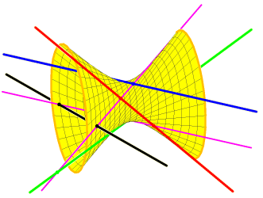

Frank Sottile

University Lecture Series volume 57, AMS, 2011.
200+viii pages.
Older version: math.AG/0609829.
|  |
Real Solutions to Equations from Geometry Frank Sottile |
|
|
|
Real
Solutions to Equations From Geometry, University Lecture Series volume 57, AMS, 2011. 200+viii pages. Older version: math.AG/0609829. |
|
Understanding, finding, or even deciding the existence of real solutions to a system of equations is a very difficult problem with many applications. While it is hopeless to expect much in general, we know a surprising amount about these questions for systems which possess additional structure. Particularly fruitful---both for information on real solutions and for applicability---are systems whose additional structure comes from geometry. Such equations from geometry for which we have information about their real solutions will be the subject of this short course.
We will focus on equations from toric varieties and homogeneous
spaces, particularly Grassmannians. Not only is much known in these
cases, but they encompass some of the most common applications. The
results we discuss may be grouped into three themes:
(1) Upper bounds on the number of real solutions.
(2) Geometric problems that can have all solutions be real.
(3) Lower bounds on the number of real solutions
Upper bounds as in (1) bound the complexity of the set of real
solutions---they are one of the sources for the theory of o-minimal
structures. Lower
bounds as in (3) give an existence proof for real solutions. Their
most spectacular manifestation is the non-triviality of the
Welschinger invariant, which was computed via tropical geometry.
The book has three parts, grouped by geometry:
I) Overview (Chapter 1)
II) Toric varieties, upper and lower bounds (Chapters 2--6)
III) Grassmannians and the Shapiro Conjecture (Chapters 7--11)
Topics for each Chapter